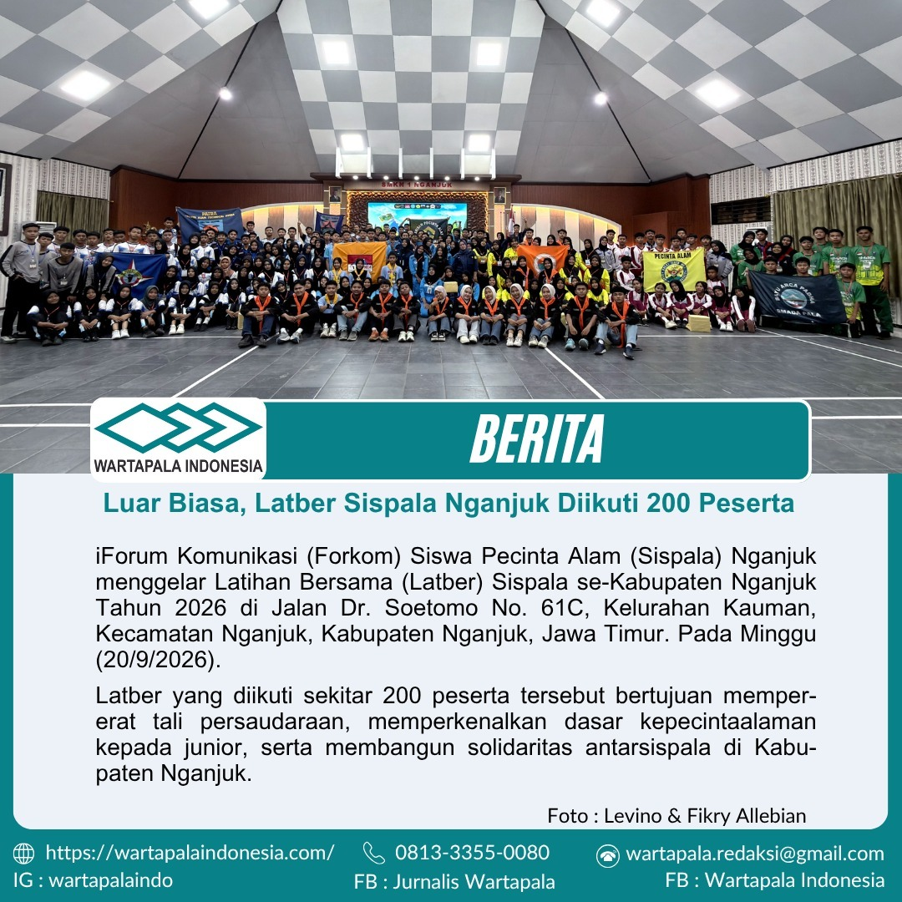

⌁
Konservasi
Menumbuhkan kepedulian dan tindakan nyata untuk menjaga alam dan lingkungan.
FORUM KOMUNIKASI SISWA PECINTA ALAM
Bersama Menjaga Alam, Berkarya dan Berkolaborasi.
TENTANG KAMI
FORKOM SISPALA Nganjuk merupakan ruang komunikasi, silaturahmi, edukasi dan kolaborasi bagi Siswa Pecinta Alam (Sispala) di Kabupaten Nganjuk.
Kehadiran forum ini menjadi wadah untuk memperkuat persaudaraan, berbagi pengalaman, mengembangkan kegiatan kepencintaalaman, serta menumbuhkan kepedulian terhadap lingkungan.
Kenali organisasi kami →NILAI & FOKUS
Menyatukan semangat pecinta alam melalui kegiatan yang edukatif, kolaboratif dan berdampak bagi lingkungan.
Menumbuhkan kepedulian dan tindakan nyata untuk menjaga alam dan lingkungan.
Berbagi pengetahuan dasar kepencintaalaman, keterampilan lapangan dan karakter.
Membangun persaudaraan dan komunikasi antar-Sispala di Kabupaten Nganjuk.
Mendorong pengalaman lapangan yang aman, bertanggung jawab dan berkesan.
Membuka ruang bagi anggota untuk berkembang melalui pengalaman dan kolaborasi.
Mendorong budaya kegiatan yang bertanggung jawab terhadap ruang hidup bersama.
ORGANISASI
Tujuh Sispala penggagas menjadi bagian dari langkah awal pembentukan FORKOM SISPALA Nganjuk.
KEGIATAN
 Tambahkan foto
Tambahkan fotoKEGIATAN TERBARU
Kegiatan Latihan Bersama Sispala Nganjuk 2026 menjadi ruang silaturahmi, berbagi pengetahuan dasar kepencintaalaman, membangun solidaritas, serta mendapatkan pengalaman bersama.
Detail Kegiatan →BERITA TERBARU

Tambahkan fotoForum Komunikasi Siswa Pecinta Alam (FORKOM SISPALA) Nganjuk menggelar Latihan Bersama Sispala se-Kabupaten Nganjuk Tahun 2026. Kegiatan diikuti sekitar 200 peserta dan berisi materi kepencintaalaman dasar, tali-temali, latihan fisik dan mental, permainan serta eksplorasi.
Sumber: Wartapala Indonesia
Baca berita lengkap ↗GALERI
Ganti foto-foto contoh di folder images/galeri/ dengan dokumentasi kegiatan Anda.
MARI TERHUBUNG
KONTAK
Untuk informasi organisasi, kegiatan, kerja sama, dokumentasi, atau kebutuhan lainnya, silakan hubungi kanal resmi FORKOM.